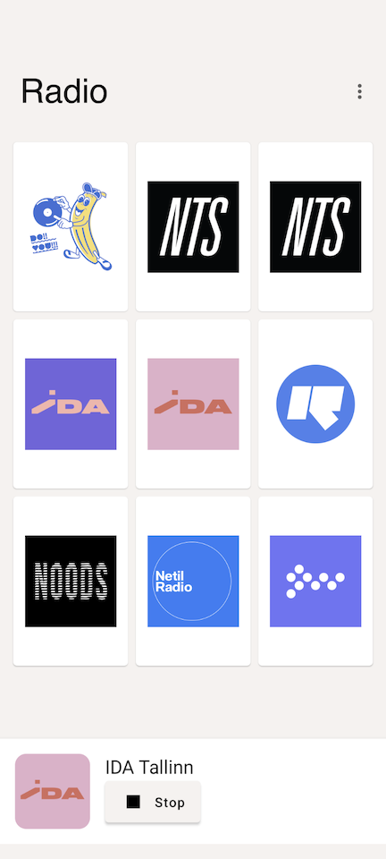
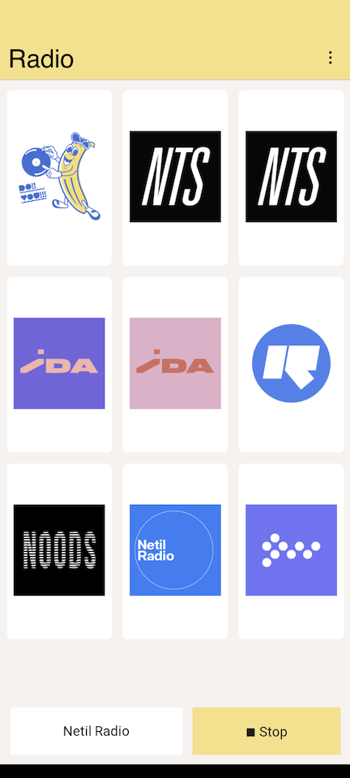

Radio
Radio is a simple app exploring development using Jetpack Compose for native Android, and also Kotlin/JS to create a web PWA.
If you have a little technical know-how for both versions you can create your own curated stations list by copying the JSON format in the main feed and hosting somewhere yourself (Github pages, or Neocities should be fine).
Web
Android
 